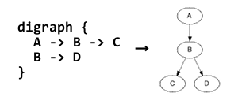

Interactive GraphViz on your browserInteractive GraphViz on your browser
Interactive GraphViz on your browserInteractive GraphViz on your browserLiviz.js is a DHTML based “dot” tool of GraphViz. See GraphViz.org for more about dot langage.

To get started, write dot code above and click  button.
button.
Core algorhythm is ported from original GraphViz using Emscripten so that Liviz.js accepts full set of dot langauge. But renderer implementation is tiny so most of decoration will not be drawn.
Liviz.js modifies some parts of GraphViz but they are hell of ugly makefiles and bad hacks now. So please wait while cleaning... (If you want to see anyway, tell me on twitter)
GraphViz is distributed under The Eclipse Public License v 1.0
See http://www.graphviz.org/License.php
Javascript Diff Algorithm
By John Resig (http://ejohn.org/)
Modified by Chu Alan "sprite"
Released under the MIT license.
More Info:
http://ejohn.org/projects/javascript-diff-algorithm/
Copyright (c) 2010-2011 Emscripten authors, see AUTHORS file.
Permission is hereby granted, free of charge, to any person obtaining a copy
of this software and associated documentation files (the "Software"), to deal
in the Software without restriction, including without limitation the rights
to use, copy, modify, merge, publish, distribute, sublicense, and/or sell
copies of the Software, and to permit persons to whom the Software is
furnished to do so, subject to the following conditions:
The above copyright notice and this permission notice shall be included in
all copies or substantial portions of the Software.
THE SOFTWARE IS PROVIDED "AS IS", WITHOUT WARRANTY OF ANY KIND, EXPRESS OR
IMPLIED, INCLUDING BUT NOT LIMITED TO THE WARRANTIES OF MERCHANTABILITY,
FITNESS FOR A PARTICULAR PURPOSE AND NONINFRINGEMENT. IN NO EVENT SHALL THE
AUTHORS OR COPYRIGHT HOLDERS BE LIABLE FOR ANY CLAIM, DAMAGES OR OTHER
LIABILITY, WHETHER IN AN ACTION OF CONTRACT, TORT OR OTHERWISE, ARISING FROM,
OUT OF OR IN CONNECTION WITH THE SOFTWARE OR THE USE OR OTHER DEALINGS IN
THE SOFTWARE.
Copyright (c) 2011-2012 Satoshi Ueyama
Permission is hereby granted, free of charge, to any person obtaining a copy of this
software and associated documentation files (the "Software"), to deal in the Software
without restriction, including without limitation the rights to use, copy, modify,
merge, publish, distribute, sublicense, and/or sell copies of the Software, and to permit
persons to whom the Software is furnished to do so, subject to the following conditions:
The above copyright notice and this permission notice shall be included in all copies or
substantial portions of the Software.
THE SOFTWARE IS PROVIDED "AS IS", WITHOUT WARRANTY OF ANY KIND, EXPRESS OR IMPLIED,
INCLUDING BUT NOT LIMITED TO THE WARRANTIES OF MERCHANTABILITY, FITNESS FOR A PARTICULAR
PURPOSE AND NONINFRINGEMENT. IN NO EVENT SHALL THE AUTHORS OR COPYRIGHT HOLDERS BE LIABLE
FOR ANY CLAIM, DAMAGES OR OTHER LIABILITY, WHETHER IN AN ACTION OF CONTRACT, TORT OR
OTHERWISE, ARISING FROM, OUT OF OR IN CONNECTION WITH THE SOFTWARE OR THE USE OR OTHER
DEALINGS IN THE SOFTWARE.